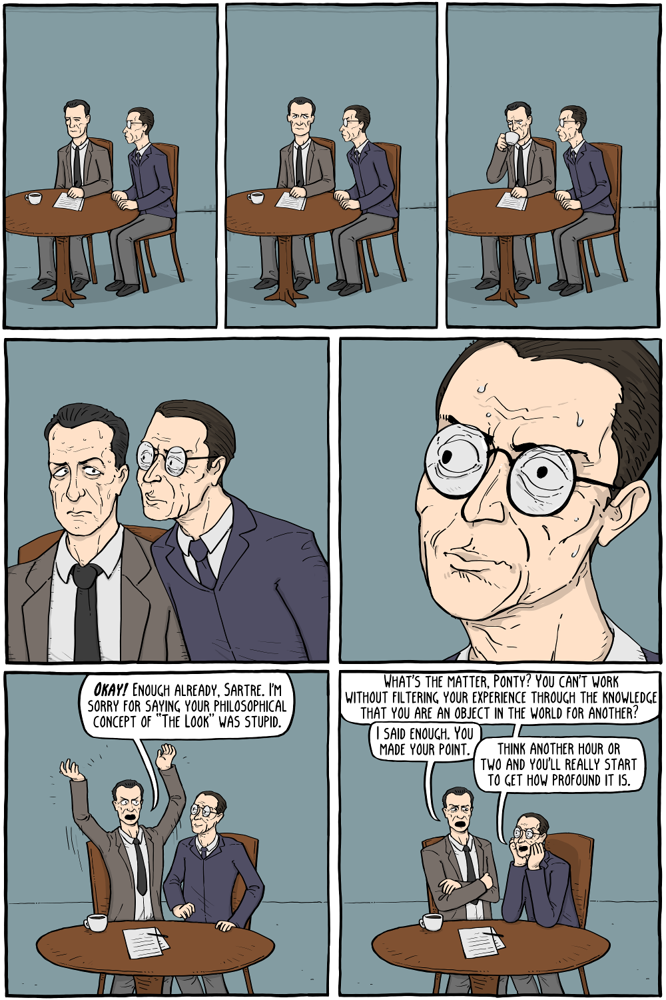

TELL ME, WHAT IS IT LIKE BEING YOU?
4th July 2024
Lately, I have not felt like doing the things I usually do when I am by myself, which is watching random shows and movies, sometimes taking a shot or three of tequila, listening to music, and dancing in my room until I am sleepy and then going to bed. So I have found myself reading a lot and writing quite a bit, but every so often I get bored of doing those things and want to do other things. I could go for a hike or a swim or whatever else, but I wouldn’t be doing those things because I want to, no I would be doing them solely out of a desperate want to fill my time with something, anything. So instead I find myself sitting in my room doing little to nothing most days, moving between my bed, my desk, and the red chair I have out in the backyard watching the day go by. At some point, I found myself wondering what other people do when they are alone, what people do when they have no obligations directing their day. Do we all just sit in our rooms and stare at the ceiling when we are not out in the world hanging out with each other? I don’t know, I am sure most people would not think what others do on the daily is all that interesting, I mean it's just life, but for whatever reason it is just something that absolutely intrigues me at the moment. My hope with this post is to elaborate on what line of thought and reasoning led to my newfound interest in other people's daily lives or more specifically the impact of solitude on a person’s experience of the world. Of Course, if I am assuming that solitude has an impact on a person’s experience of the world, I am inadvertently claiming that company has some sort of impact on a person’s experience of the world as well. I am sure there is research on the impact of solitude on experience, however, the literature I am most familiar with has dealt more with the impact of company on experience, so I will utilize the ideas made on that front to make an argument for why I believe what people are like alone is worth the intrigue.
I am obviously of the impression that who people are alone differs from who they are when they are around others, but why do I believe that? Well, I suppose in part that belief comes from observing myself. When I am around people I am generally more aware of my body in space and time, how my body moves, how I talk, and even how I feel. It's rather uncomfortable if I am being honest, tiring even. I am also more critical of myself and everything I do in ways that I am not when I am by myself. When I am by myself I am just a conscious individual in space and time taking in the world without much judgment or at least not serious ones. Jean Pierre Sartre, a 20th-century French philosopher, maybe noticing this in himself as well, I am just speculating here, made an argument for the concept of the look which is an idea that basically tries to capture this shift one experiences when they go from being a consciousness being looking out onto the world to being an object in someone else’s consciousness when they are looked at. Sartre uses the example of a person peeping through a keyhole, prior to being perceived there is no self to be beheld and criticized, just a conscious mind peering into the world. However, if someone were to approach the individual while they were peeping through the keyhole, thereby perceiving them, only then would a sense of self emerge, one that can be criticized and judged. Hence, in addition to concluding that we only see ourselves because others do, Sartre concludes that being looked at has a direct impact on how we exist in the world. In essence, he claims that an individual's phenomenological experience of the world is fundamentally altered by the act of being perceived. If you have heard of the looking-glass self, it is a very similar idea. The only difference is while Satre is primarily concerned with the impact of perception on one’s conscious experience, Charles Cooley, the dude who came up with the theory of the looking-glass self, was primarily concerned with the formation of the self due to others' imagined or actual perception of us.
Here is a fun little comic I came across a while back that nicely captures Satre’s Idea of the look
The look by existential comics
I am not sure how far that goes to clarify my stance that who we are alone and who we are around others are not the same, but if you are convinced or never needed to be in the first place, then I am sure you can understand why I or anyone else would be absolutely intrigued by the question of what people do when they are by themselves- what they think about, and also just what they feel. On a more personable note though, I think the reason I am intrigued by the question is because it is a very intimate one, at least it is if you overthink it enough. What I mean is, I believe we are all most ourselves when we are alone. When we have no obligations or places we ought to be, I think, is when we begin the very personal endeavor of figuring out who we are and how we want to exist in the world. So the question of what people do when there is nothing they feel they ought to be doing is really a question of what they value, what they think is worthwhile, worth-doing and what they think isn’t. It’s a question of the person they are beyond the many roles they play when they are out and about in the world. It is a question of who they are when they are not being told who they ought to be. But beyond all that, it is simply a question of what experiencing the world from their standpoint is like and I can not think of a more personal or intimate question than that.
I like getting to know my friends, so naturally, after spending a day or two dwelling, mulling, pondering, etc on all this, I decided to text a couple of friends and ask them what they did on the daily. I specifically asked them the question, on days when they didn’t have work or any other obligations what did they do all day? Their responses came down to hobbies and chores as I presume most people’s response would. On one hand, it was interesting getting even just a glimpse of what their lives look like on the daily, what they are like when it is just them in the world facing life as it is. But on the other hand, I found myself wondering how else one can spend their alone time, are the only options hobbies and chores? I have said this before somewhere and I am saying it again. I feel like there ought to be more, not sure what more there could be, but it feels like there should be more, more depth, more options, just more.
But Maybe I am missing the point here. Maybe, it has never been about what we do but rather about how we do the things we do. Let me elaborate on what I mean here using an example. You see a hundred people could run a marathon, but I bet each person’s experience of being in the Marathon properly differs, some may have been training for months and are probably have an easier time, others may have trained for months and are still having a hard time, some might be doing it just to prove they can run a marathon without any training, my point is factors such as training among other things can fundamentally determine how each individual experiences running a marathon, it therefore seems fair to conclude that just because two people are doing the same thing does not mean they are having the same experience. So sure, there is only so much that can be done in the world, only so many hobbies, so many places to go, and even only so many people to meet. However, there are a million ways to do each of those things, which adds a whole other dimension to life, it gives living a depth that personally, I had been blind to. It is the dimension of living that intrigues me at the moment. I am curious about how people choose to be when they can and why. But I also have to wonder, of all the possible ways to do things, is there ever really a reason to do things one way over another? Beyond preference, can there really be real reasons?
I don’t know, I will have to dwell on that some other time, but I do know that for no real reason other than preference, I would like to live more internationally, to do things with more awareness. A long time ago, probably around the time when I first learned about the law of conservation of energy in physics, the one that states that energy can neither be created nor destroyed only transformed or transferred and around when I learned about the infamous equation about energy being equal to mass multiplied by the speed of light square, an equation which basically proves that mass and energy are interchangeable, anyway I arrived at the realization that because we are mass and mass is energy and energy can neither be created nor destroyed, we basically will exist forever and have existed since the start time. However, we are only conscious for a lifetime which in the span of the universe is a blip. In other words, we are like if a rock becomes conscious for a few seconds and then goes back to being a rock. Now what better way to spend our brief moment of consciousness than being absolutely in love with life? To me, being in love with life means living intentionally and with awareness. So yeah, there are obviously a million ways to be in the world, but I would just like to live more internationally, to do things with more awareness.